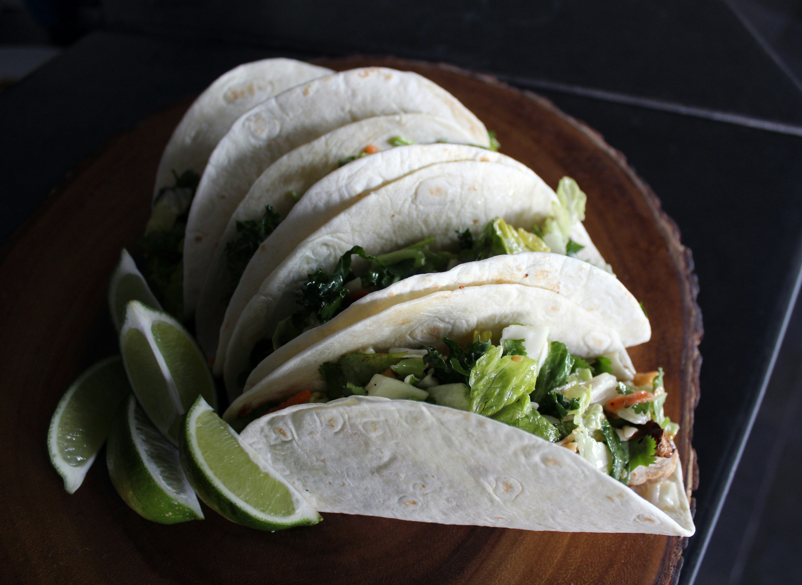

Rotel Tacos

Photo by Emily Simenauer on Unsplash
Description
These Rotel tacos are salty, slightly spicy, creamy, and crunchy all at once. It’s like your favorite dip meets the perfect bite of a taco. I recommend extra lettuce for that perfect cold crunch against the rich filling.
Ingredients
- 1 tablespoon olive oil
- 1 small onion, finely chopped
- 1 lb ground sirloin
- 2 tablespoons low sodium Taco seasoning
- 8 ounces processed American cheese (such as Velveeta®), cut into large chunks
- 1 (10-ounce) can diced tomatoes with green chiles (such as RO*TEL®)
- 8 to 10 crunchy taco shells
- shredded iceberg lettuce
- toppings of choice such as diced tomato, hot sauce and sour cream (optional)
Steps
- Heat oil in a large skillet over medium-high heat. Add onion and cook 1 minute, stirring constantly. Add ground beef and cook, crumbling with a wooden spoon until browned and cooked through, 5 to 10 minutes. Add in taco seasoning and cook for 1 minute. Mix in cheese and tomatoes and reduce heat to medium-low. Cook stirring constantly, until cheese is melted and mixture comes to a simmer. Cook for 3 minutes and remove from heat.
- Add filling to taco shells and top with shredded lettuce and other toppings, if desired.
links